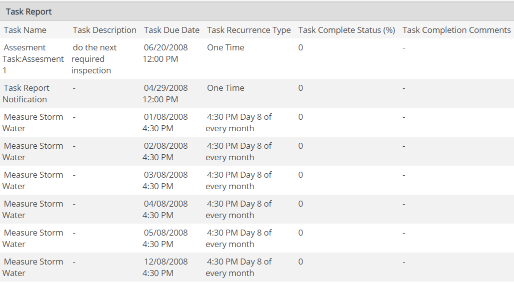

A Task Report may be used to produce information about individual task instances.
Some examples of Task Reports are:
The Task Report designer allows you to create reports on tasks for particular objects, or for tasks assigned to specific users or groups. Tasks can be listed by location, assignee, completion status, due date, and many other grouping methods.
For example, a report could be created to lists all overdue tasks for a specific facility, assigned to a specific user, and due during a specified time frame.
Each row of the Task Report represents one task. The columns of a Task Report show the selected task properties or properties of the object associated with the task.

Task Reports will return data on defined tasks or task instances, depending on the properties included. For example, if only the Task Name is included, the Task Report returns data on defined tasks only, which means recurring tasks and multi-object tasks count as one task. If Task Due Date is included, the Task Report includes data on each task instance.
Multi-object tasks can be aggregated to produce one row for all tasks, or non-aggregated to report on separate properties for each task-object instance. If multi-object tasks are aggregated, the Time to Complete, Cost to Complete and Comments fields are not reported. For more information, see Multi-Object Task Reporting.
Task scheduling information may also be included. The Recurrence Type will display the time, in the appropriate culture-dependent format (AM/PM or 24-hr time, as defined in the user profile).
Task Completion Link: You can include a link to the Task Completion page by including the Task Completion Link field in the report.
To create or run a Task Report, users must have Report permission for all objects associated with the tasks, or whose properties are included in the report—unless they are the assignee or assignor. Task assignees and assignors do not need object permissions to run reports for their own tasks.